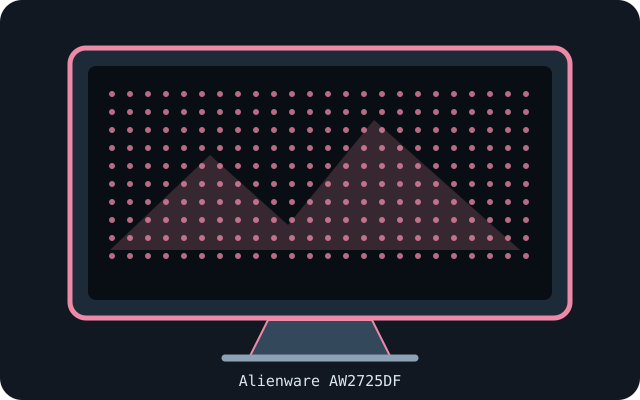

[ INDIVIDUAL COMPONENT // DISPLAYS ]
Dell Alienware AW2725DF
26.7-inch QHD QD-OLED gaming monitor with a 360 Hz native refresh class.

IDENTIFICATION: Confirm the complete model/SKU and region on the rear label. Specifications below reflect manufacturer-published information for this model family; input timings and power supplies may vary with source, firmware, region and operating mode.
Specifications
| Catalog subcategory | OLED displays |
|---|---|
| Exact product / family | Dell Alienware AW2725DF |
| Panel technology / size | 26.7-inch Quantum Dot OLED (QD-OLED), 16:9 |
| Native resolution | 2560 × 1440 |
| Native refresh rate | Up to 360 Hz at native resolution, subject to the source, cable and selected timing. |
| HDR / luminance / contrast | VESA DisplayHDR True Black 400; 250 cd/m² typical and up to 1000 cd/m² peak for small HDR highlights. Dynamic contrast is rated 1,500,000:1. |
| Inputs and I/O | 2 × HDMI 2.1; 1 × DisplayPort 1.4; USB 3.2 Gen 1 upstream/downstream hub; 3.5 mm audio output. |
| Stand / VESA | Height, tilt, swivel and pivot adjustments; VESA 100 × 100 mm mounting pattern. |
| Power | AC input is 100–240 V; consumption varies with content and operating mode. Confirm the exact regional electrical rating on the monitor label/manual. |
Signal and compatibility notes
The 360 Hz mode requires a host GPU and link capable of the selected native-resolution timing. Confirm input bandwidth and supported chroma/bit-depth combinations in Dell's timing table; use the supplied or certified cable. OLED pixel care is not a substitute for avoiding prolonged static content.
Native resolution and refresh depend on the connected computer's GPU, supported timing, port, cable, firmware, operating system and selected color format. Confirm capabilities in the model-specific manual rather than inferring them from connector shape alone.
OLED care and preservation
OLED panels can retain static imagery. Enable the manufacturer's panel-protection, pixel-shift and refresh features; follow on-screen prompts and documented care intervals. Avoid disconnecting power during a panel maintenance cycle, and record operating hours, firmware, calibration state and image condition for archival systems.
Manufacturer manuals & sources
- Dell — AW2725DF official manuals and specificationsManufacturer-hosted model information; verify the exact regional SKU, revision, and current manual before installation.
- Dell — AW2725DF support documentationManufacturer-hosted model information; verify the exact regional SKU, revision, and current manual before installation.